The bar under the board
| Set · desktop | Search · desktop | Set · phone | Search · phone | |
|---|---|---|---|---|
| APrev · context and progress · Next | 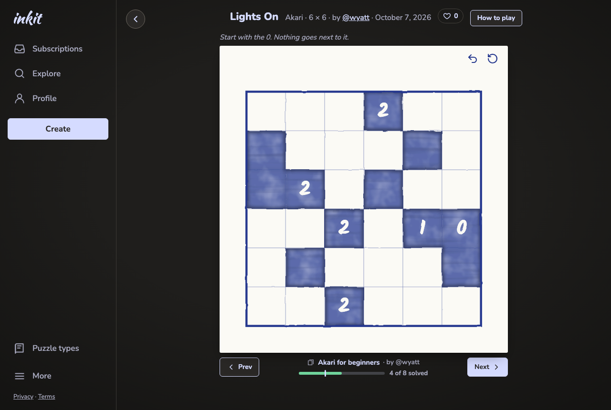 | 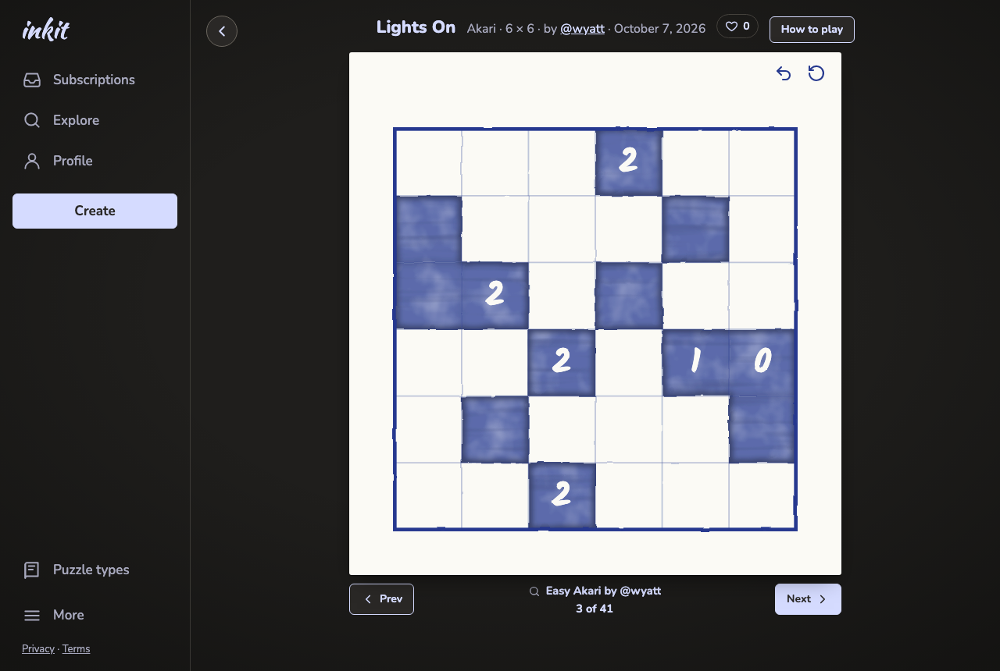 | 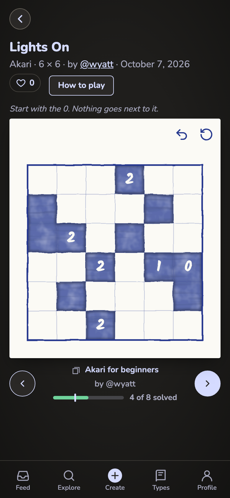 | 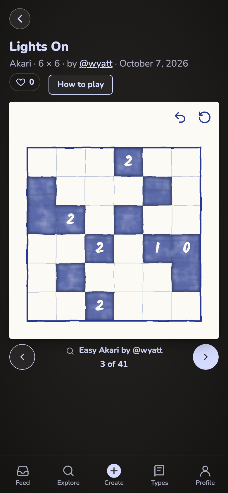 |
| BStacked in the middle | 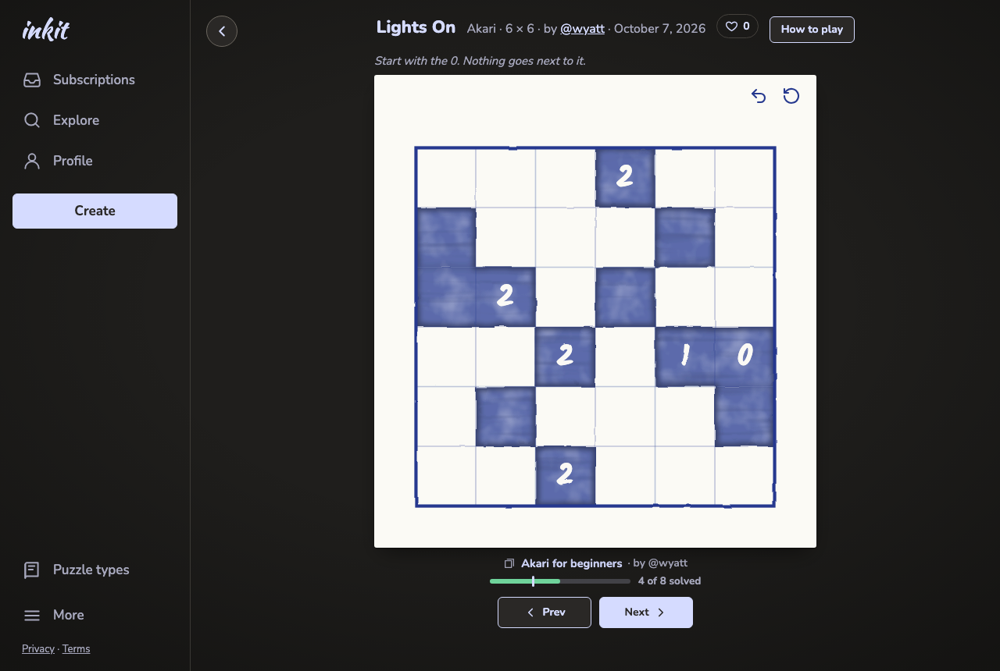 | 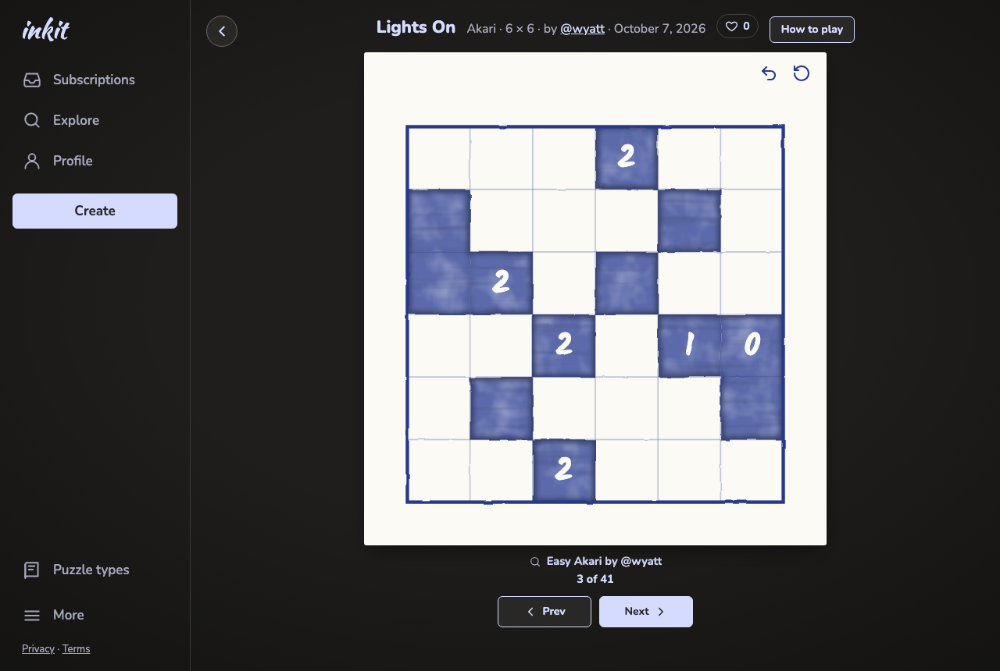 | 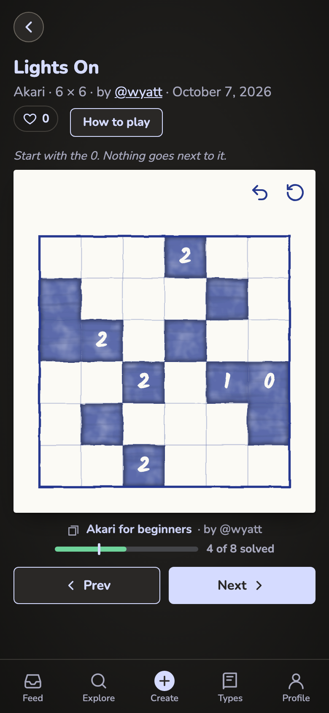 | 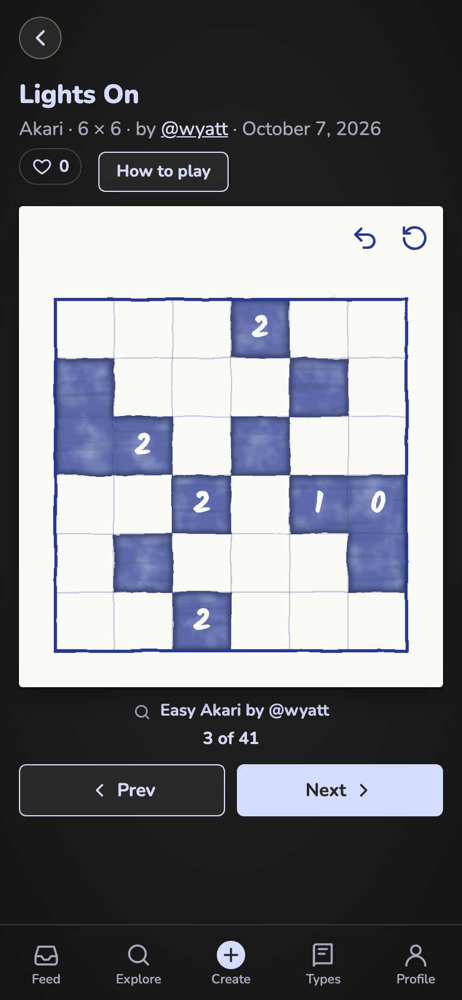 |
The maker's note
| Desktop | Phone | |
|---|---|---|
| aUnder the title row | 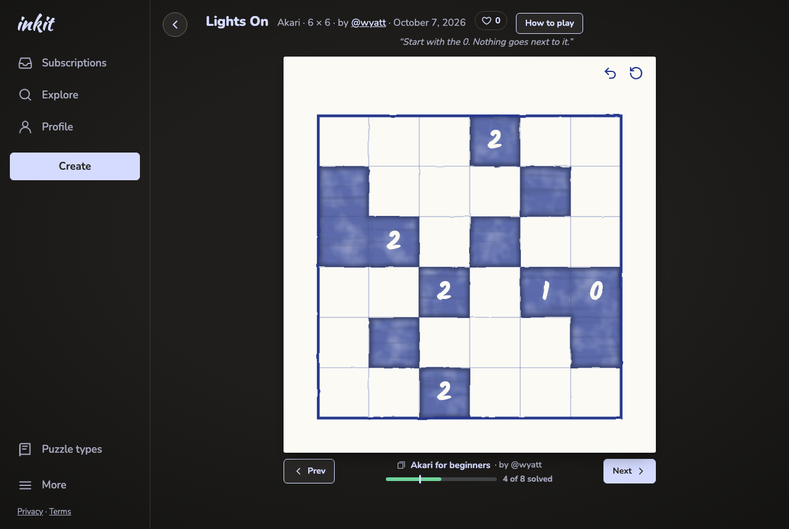 | 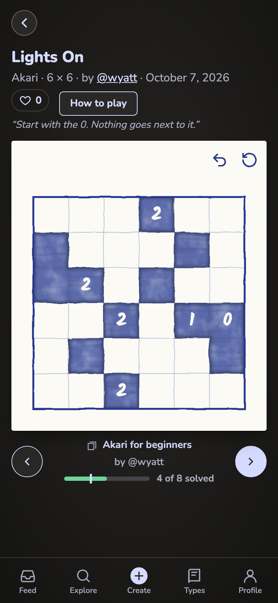 |
| bOn the paper, top left | 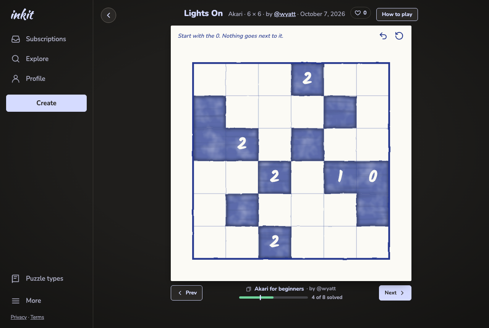 | 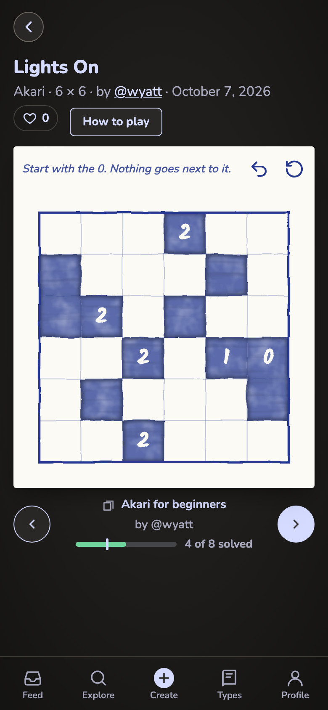 |
| cAbove the paper, left edge (used) |